에스트래픽 연계 팀 프로젝트
HI-FIVE 스마트 톨링
현장에 설치한 Jetson 엣지 장비가 번호판을 직접 판독하고, 그 결과를 관제 서버로 보냅니다.
- 맡은 일
- 팀장으로 장치와 서버 간 통신을 맡고, 시험 결과를 에스트래픽 본사에서 발표했습니다. 번호판 인식은 팀원과 함께 개발했고, 2차에서는 예지보전 API와 DB 연동을 검증했습니다.
- 확인한 결과
- 유선 연결을 끊은 뒤에도 서버는 LTE 예비망으로 통행 기록을 받았습니다.

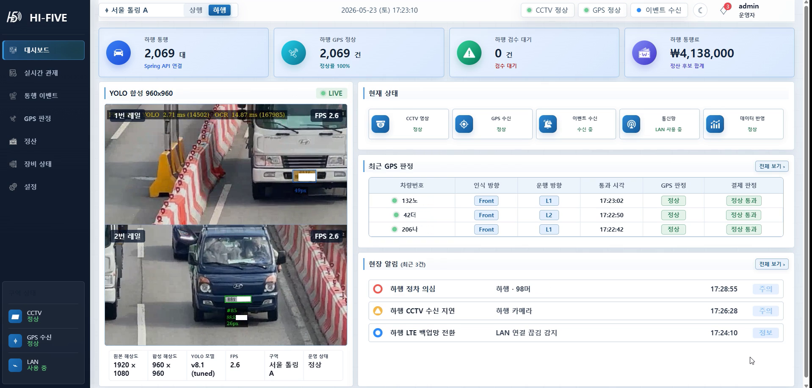
- 구분과 기간
- 팀 프로젝트 (1차 2026.04.27~06.01, 2차 06.04~06.30)
- 프로젝트명
- HI-FIVE Smart Tolling + PdM PoC
- 사용 기술
- Jetson / DeepStream, YOLO / CRNN-OCR, WebTransport / Protobuf,
 Spring Boot,
Spring Boot,  FastAPI,
FastAPI,  PostgreSQL, Isolation Forest / LSTM-AE,
PostgreSQL, Isolation Forest / LSTM-AE,  Vue 3 /
Vue 3 /  Docker
Docker
유무선 전환과 차량 통행 시연
유선에서 LTE로 전환하는 데 0.84초, 유선으로 돌아오는 데 0.17초가 걸렸습니다.

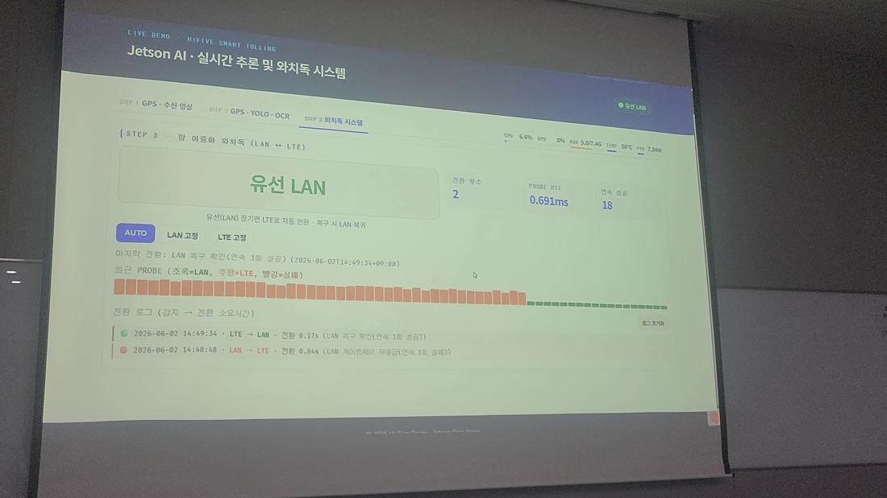
오른쪽에는 차량에서 보낸 GPS 좌표가 시간순으로 표시됩니다. 서버는 네 기준점으로 정한 사각형 통행 구역(지오펜스) 안에 차량이 있는지를 기준으로 통과 여부를 판단했습니다.

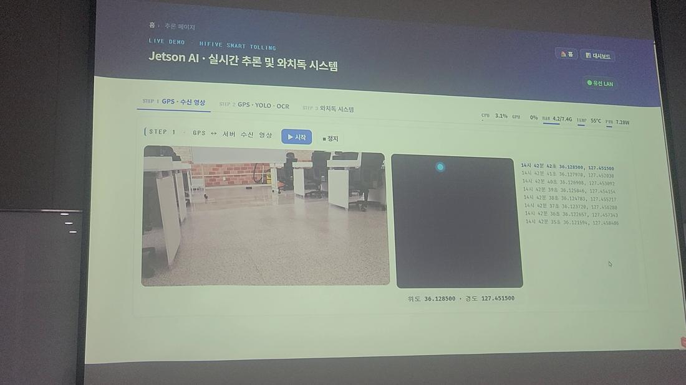
같은 차량의 번호판을 여러 프레임에서 반복해 읽었습니다. 이 시연에서 최종 판독값은 실제 번호판과 일치했습니다.

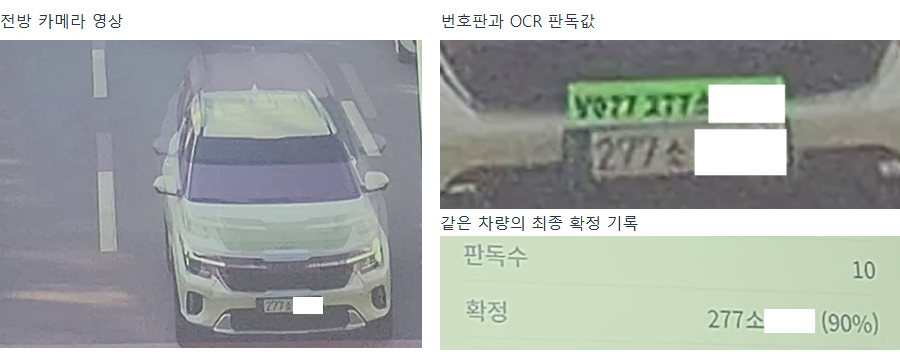
본사 발표와는 다른 시연입니다. 세 건 모두 GPS 판정은 ‘정상’, 결제 판정은 ‘정상 통과’로 기록됐습니다.
관제 화면 전체 보기
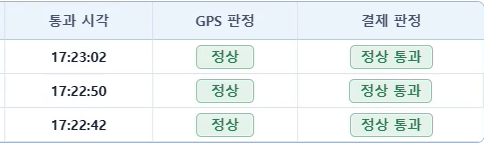
1차: 번호판 인식과 통행 기록 전송
통행을 기록할 때는 Jetson이 번호판을 판독해 그 결과를 관제 서버로 보냅니다. 전송 방식을 고르는 시험에서는 같은 이미지 3,000장을 MQTT와 WebTransport로 각각 보냈습니다. 지연 5ms와 손실률 3%로 설정한 유선망에서 모두 보내는 데 MQTT QoS 1은 63.35초, WebTransport는 8.44초가 걸렸습니다.

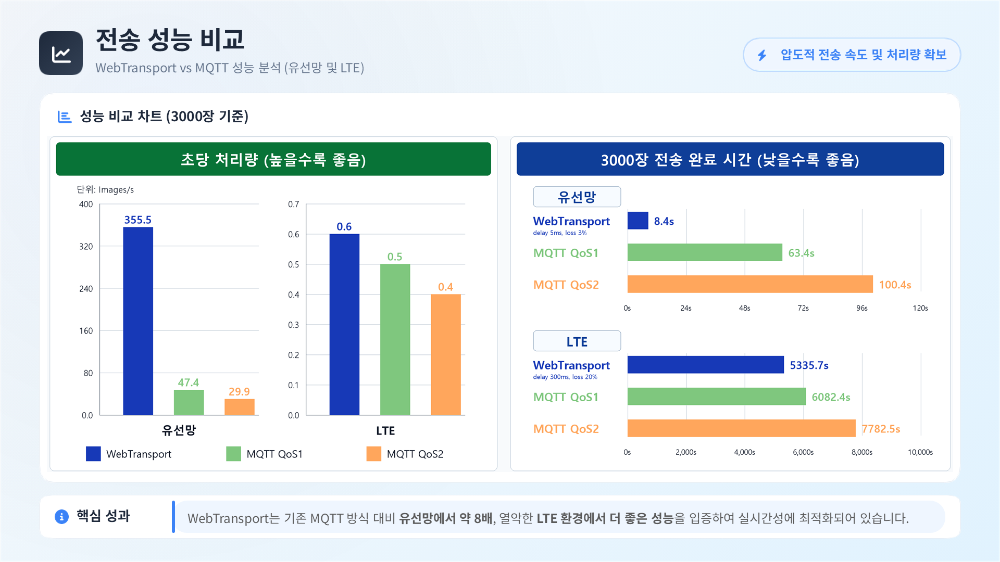
WebTransport를 선택한 이유와 통행 기록 재전송
LTE 조건(지연 300ms, 손실률 20%)에서도 두 방식 모두 3,000장을 수신했습니다. 스트림 8개를 쓴 WebTransport는 MQTT QoS 1보다 총 전송 시간이 약 12% 짧았습니다. 팀은 이 결과와 별도 메시지 브로커 없이 장치가 수신 서버에 직접 연결할 수 있다는 점을 보고 WebTransport를 선택했습니다.
제가 맡은 수신 서버는 Spring Boot가 통행 기록을 받았거나 이미 처리한 기록이면 장치에 ACK를 보냅니다. 일시적인 오류에는 RETRY를 보내 장치에 보관한 기록을 다시 보내도록 하고, 잘못된 요청에는 REJECT를 보냅니다. 유선 연결이 끊겼을 때 Watchdog가 LTE 예비망으로 전환하는 동작은 별도 시연에서 확인했습니다.
영상 대신 장치에서 읽은 번호판을 전송
Jetson에서 GStreamer와 CUDA 메모리를 ZeroCopy로 연결하고 TensorRT FP16으로 번호판을 읽었습니다. 서버에는 판독 결과를 통행 이벤트로 보내고 관제 영상과 증거 이미지는 별도 경로로 보냈습니다.
두 차선에서 필요한 영역만 잘라 960×960 입력 구성
1920×1080 영상에서 차선별 960×480 영역을 잘라 위아래로 배치했습니다. 전체 영상을 축소하지 않고 번호판 영역도 원래 픽셀 크기로 OCR에 전달했습니다.
여러 프레임에서 같은 번호가 잡혀야 확정
Attention, Transformer, VLM과 비교해 장치에서 반복 실행할 CRNN을 선택했습니다. 기본 설정에서는 형식에 맞고 신뢰도가 0.70 이상인 같은 번호를 0.30초 이상 간격으로 다시 읽어야 확정합니다. 후보 중 가장 신뢰도 높은 관측을 남깁니다.
2차: 카메라 품질 이상 탐지
번호판 인식률이 갑자기 떨어졌다가 회복되는 것과 몇 시간에 걸쳐 조금씩 나빠지는 것은 다른 점검 신호입니다. 팀은 카메라와 차로별로 판독 결과를 10분 단위로 모아, 한 구간의 수치와 여러 구간에 걸친 변화를 함께 살폈습니다.

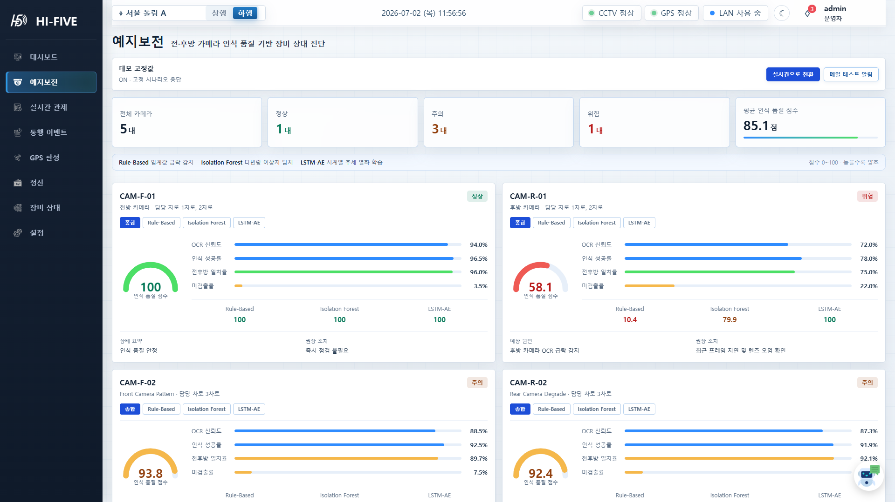
- 규칙 기반: 한 구간의 기준 이탈. 인식 성공률이 80% 미만이거나 누락률이 10%를 넘으면 어떤 지표가 기준을 벗어났는지 점검 사유로 남겼습니다.
- Isolation Forest(IF): 평소에 드문 지표 조합. 같은 카메라와 차로의 최근 최대 48개 구간을 비교 기준으로 삼았습니다. OCR 신뢰도와 누락률, 전후방 판독 불일치율이 각각 기준 안에 있어도, 평소 보기 드문 조합이면 점검 후보로 봤습니다.
- LSTM 오토인코더(LSTM-AE): 서서히 떨어지는 인식 품질. 기본 설정에서는 연속 6개 구간을 묶어 평소 패턴으로 복원했을 때의 오차와 평균 품질이 나빠진 정도를 봤습니다. 둘 중 하나가 기준을 넘고 분석 대상 구간의 60% 이상에서 품질 문제가 나타나야 지속 저하로 판단했습니다.
종합 점수에는 규칙 기반 40%, IF와 LSTM-AE 각각 30%를 반영했지만, 높은 위험 신호가 평균에 묻히지 않도록 등급은 더 위험한 쪽을 따랐습니다. 고정 시나리오에서 한 차례 급락한 카메라는 규칙 기반에서 ‘위험’, LSTM-AE에서는 ‘정상’이었습니다. 반대로 서서히 나빠진 카메라는 규칙 기준 안에 있었지만 LSTM-AE에서 ‘주의’로 표시됐습니다.
시연에서는 품질 저하를 재현해 관제 화면에 위험도와 권장 조치가 표시되고 이메일 알림이 발송되는 것까지 확인했습니다. 실제 장비의 고장 시점이나 잔여 수명을 예측하는 성능은 측정하지 않았습니다.
시스템 구조
현장 Edge 인식 → 주망과 예비망 전송 → 중앙 저장과 관제 → 품질 지표 축적 → 세 가지 방식의 이상 탐지 → 화면과 이메일 알림

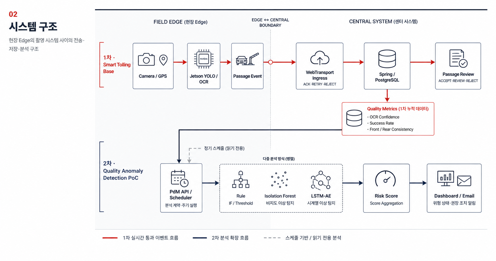
구성 요소를 글로 보기
1차 스마트 톨링
Edge 인식 결과를 재시도 가능한 통행 이벤트로 전달
- Camera / GPS: 전후방 영상, 위치, 통행 시점
- Jetson YOLO/OCR: 탐지, 문자 후보, Best-Fit
- Passage Event: Protobuf 이벤트 계약
- WebTransport Ingress: ACK, RETRY, REJECT
- Spring / PostgreSQL: 저장, 위치 판정, 검수 후보
- 관제 / 통행 검수: ACCEPT, REVIEW, REJECT
2차 품질 이상 탐지 PoC
저장된 카메라 품질 지표에서 복합 이상 징후를 탐색
- 품질 지표: OCR 신뢰도, 성공률, 전후방 일치율
- PdM API / Scheduler: 분석 계약, 주기 실행
- Rule / IF / LSTM‑AE: 서로 다른 방식의 이상 점수
- 통합 위험도: 고정 시나리오 기준 결과 결합
- Dashboard / Email: 위험 상태, 권장 조치 알림
번호판 영상 처리부터 카메라 품질 점검까지

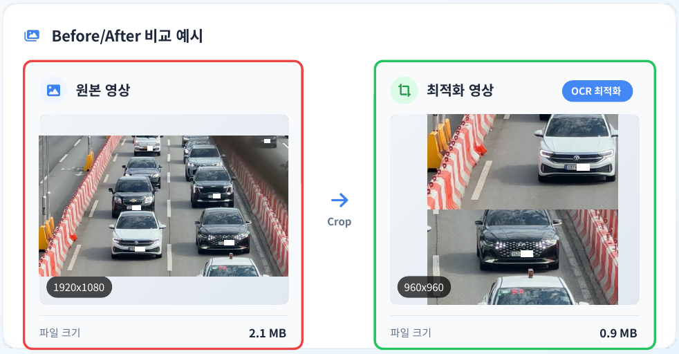

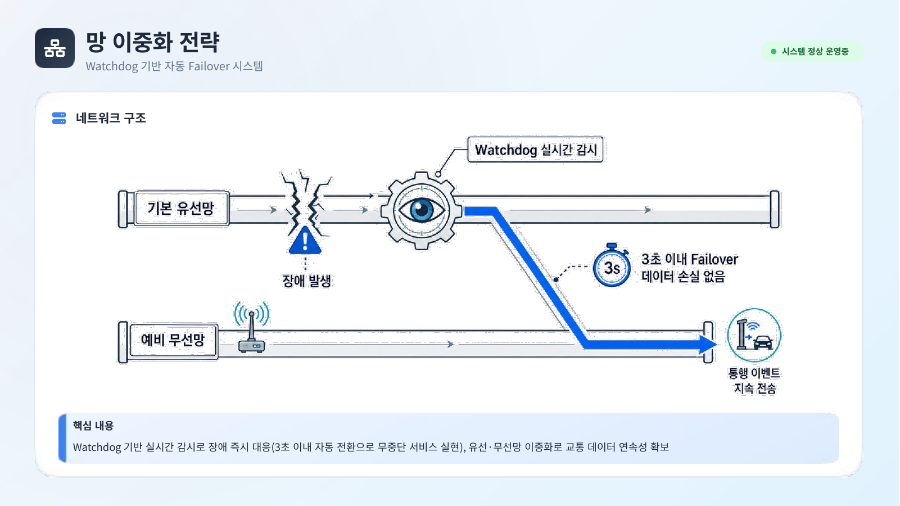

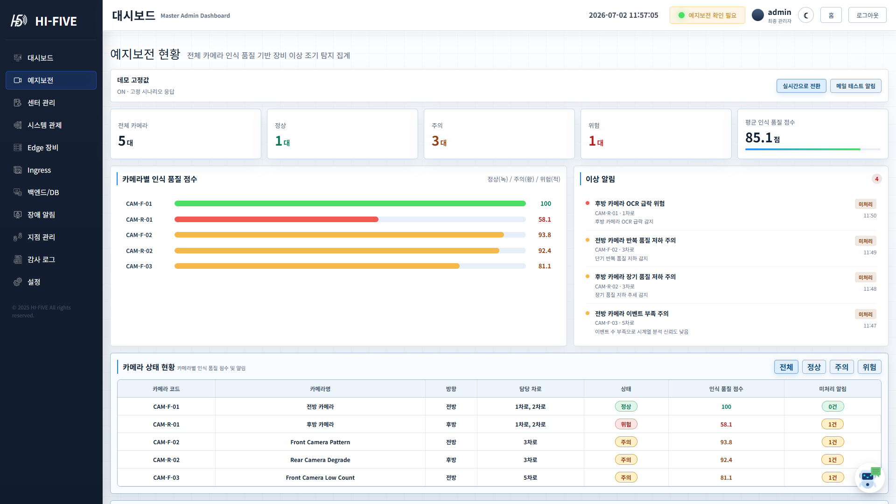